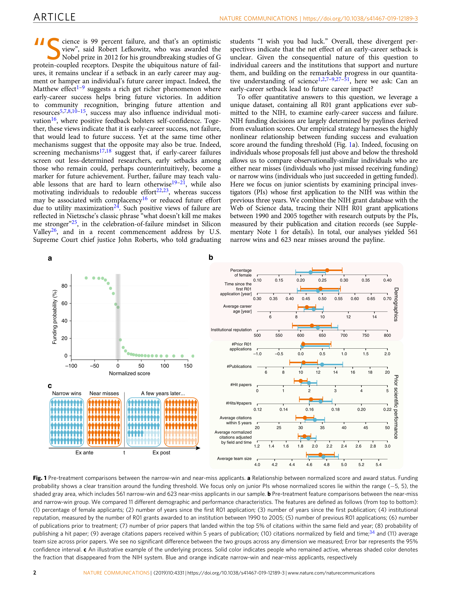

저자: Yang Wang, Benjamin F. Jones, Dashun Wang | 날짜: 2019 | Journal: Nature Communications | DOI: 10.1038/s41467-019-12189-3

Figure 1
초기 경력 실패(NIH R01 그랜트 탈락)는 단기적으로 탈락률을 10% 이상 높이지만, 살아남은 연구자들은 장기적으로 성공(narrow win) 집단을 능가한다. 펀딩 문턱 바로 아래와 위의 지원자를 준실험적으로 비교한 결과(regression discontinuity), near-miss 집단은 5년 후 논문 인용 영향력에서 narrow-win 집단보다 유의하게 높은 성과를 보였으며, 이는 선별 효과(screening)를 넘어 실패 자체가 성과를 인과적으로 향상시키는 증거와 일치한다. "나를 죽이지 않는 것이 나를 더 강하게 만든다"는 가설이 과학 경력에서 실증적으로 지지된다.
Figure 1
Figure 1: NIH R01 그랜트 펀딩 문턱 주변의 near-miss vs. narrow-win 비교. 좌측(탈락) 집단이 장기 인용 성과에서 우측(성공) 집단을 앞섬.
총평: 준실험 설계로 "실패가 강화한다"는 가설을 과학 경력에서 처음 인과적으로 검증한 탁월한 연구로, Matthew effect 패러다임에 강력한 반증을 제시하며 과학 정책과 연구자 지원 방식에 실질적 함의를 남긴다.